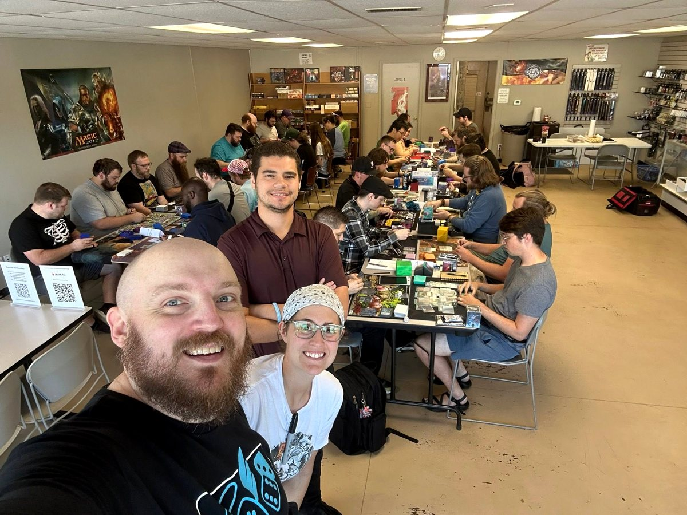
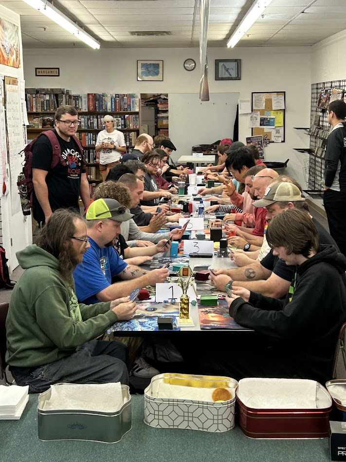

OUR COMMUNITY THROUGH THE YEARS
Past Events
Every year, our Magic community comes together to help local kids through Extra Life.

2026 Extra Life Pauper Tournament
64 registered players • Over $12,000 raised. See our event recap and gallery.

2025 Extra Life Pauper Tournament
Relive the games, prizes, and community that helped grow our event.

2024 Extra Life Pauper Tournament
Champion Dennis Perng • Event photos from Changing Hands Book Shoppe.

2023 Extra Life Pauper Tournament
Our first Pauper event at Mandalor’s Dreams • Inaugural champion Nathan Batson • 11 event photos.
Pauper Champions
2026: Tim Small • 2025: Scotty Miller • 2024: Dennis Perng • 2023: Nathan Batson